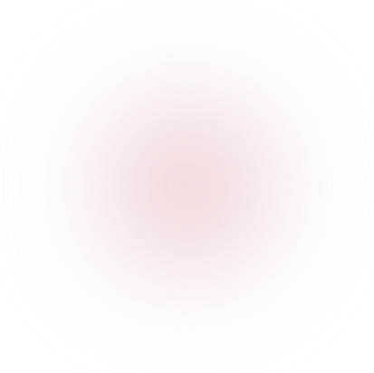
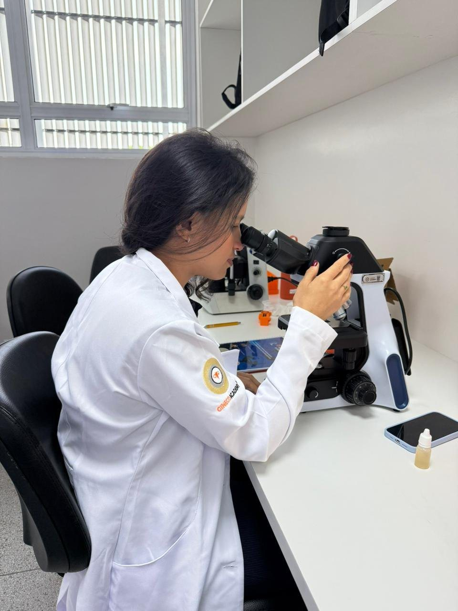

Coceira e ardência que voltam
Você já usou pomada, óvulo ou antibiótico, melhorou por uns dias e, pouco depois, o incômodo voltou.
Consulta ginecológica em Vitória/ES com microscopia do conteúdo vaginal e medição do pH para identificar a causa do corrimento, tratar de forma direcionada e acompanhar até a reavaliação.
Atendimento em Vitória/ES e região metropolitana

RQE 15655 · Ginecologia
CRM ES 18437 · CRM MG 87280
Microscopia e pH na consulta
Resultado pelo WhatsApp
Quando o incômodo se repete, ele deixa de ser só um sintoma e passa a afetar a rotina, a vida a dois e a forma como você se sente no próprio corpo.
Muitas vezes, o que falta não é mais um remédio. É saber exatamente o que está causando o corrimento.
Quero entender a causaVocê já usou pomada, óvulo ou antibiótico, melhorou por uns dias e, pouco depois, o incômodo voltou.
Um cheiro desagradável que deixa você preocupada o tempo todo, seja no trabalho, na rua ou em casa.
A irritação e o corrimento fazem você evitar a intimidade, e isso começa a pesar no relacionamento.
A sensação de que algo não vai bem no seu corpo e de que ninguém descobriu qual é a causa de verdade.

Candidíase, vaginose bacteriana, tricomoníase e outras alterações podem causar sintomas parecidos, mas pedem tratamentos diferentes.
Na consulta, a Dra. Mirna coleta uma pequena amostra do conteúdo vaginal, mede o pH e analisa o material no microscópio. Assim, o tratamento é indicado para a causa identificada no seu caso.
Coleta simples, feita durante o exameColeta simples, feita durante o exame ginecológico
Medição do pH vaginal na hora
Resultado e orientações pelo WhatsAppResultado, prescrição e orientações enviados pelo WhatsApp
Reavaliação com nova microscopiaReavaliação com nova microscopia já programada
Do primeiro atendimento à reavaliação, cada etapa tem um propósito: entender a causa e acompanhar a sua evolução.
01
Anamnese completa, sem pressa, e exame ginecológico. Você conta a sua história e é ouvida com atenção.
02
Coleta do conteúdo vaginal e medição do pH. O material é analisado no microscópio para achar a causa.
03
Você recebe o resultado, a prescrição e um guia curto de cuidados com a saúde íntima pelo WhatsApp.
04
Depois do tratamento inicial, uma nova microscopia confirma a evolução e orienta os próximos passos.
A reavaliação já sai programada.A reavaliação com nova microscopia já sai programada.